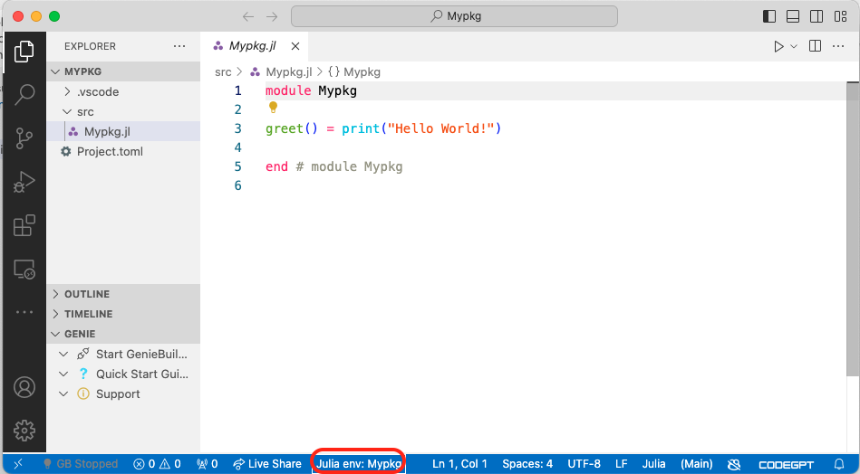
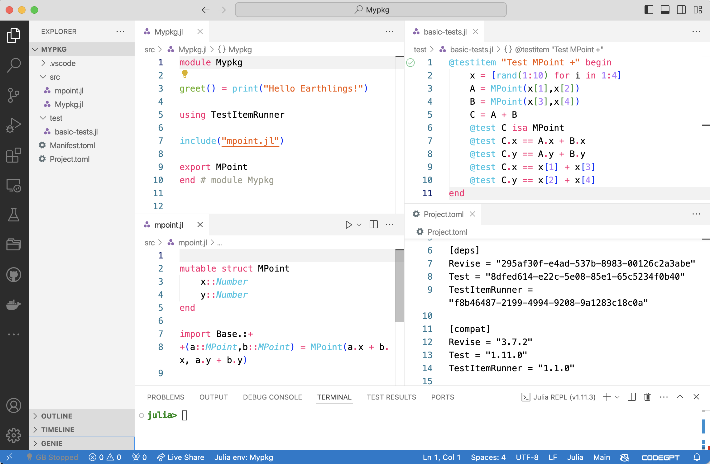

Lecture 3: Optimization 1
Creating a Julia Package for your work
- Creating a package is a great way to ensure reproducibility of your work.
- It helps to make your work shareable.
- It helps to test the code which makes up your work.
- 👉 Let’s do it!
Cookbook
- Start
julia - two equivalent options:
- enter
Pkgmode (hit]), thengenerate path/to/new/package, or - say
using Pkg, thenPkg.generate("path/to/new/package")
- enter
Here is an example:
] # this jumps into Pkg mode
(@v1.11) pkg> generate Mypkg
Generating project Mypkg:
Mypkg/Project.toml
Mypkg/src/Mypkg.jl
(@v1.11) pkg> Depending on where you started your julia session, there is now a new folder Mypkg:
shell> ls Mypkg/
Project.toml src/It’s a good idea to start a new VSCode window at that folder location. Doing so, you would see this:

- great. Start a julia repl in the usual way.
- Notice how the bottom bar in VSCode indicates that we are in
Mypkgenv - VScode asked me whether I wanted to change into this. If this is not the case, you won’t be able to load our package:
julia> using Mypkg
ERROR: ArgumentError: Package Mypkg not found in current path.
- Run `import Pkg; Pkg.add("Mypkg")` to install the Mypkg package.- We need to switch into the environment of this package before we can load it locally. This is called activate an environment:
] # in Pkg mode
(@v1.11) pkg> activate . # `.` for current directory
Activating project at `~/Mypkg`
(Mypkg) pkg> # hit backspace
julia> using Mypkg
[ Info: Precompiling Mypkg [c4d85591-a952-48fb-b3d1-49a9454516b2] Alternatively, just click on the env indicator in VSCode and choose the current folder.
Great, now we can use the functions contained in the package. Let’s see:
julia> Mypkg.greet()
Hello World!There are two ways in which we can load code into a running julia session:
- By
includeing code - equivalent to copy and pasting code into the REPL, and what happens when we say execute active file in REPL in VSCode. In practice, those mechanisms execute the functioninclude("some_file.jl"). - Via package loading: We import a set of functions contained in a package, via the
usingorimportstatements.
Notice how we did not have to say run current file in REPL or similar commands. Saying using Mypkg immediately made our code available in the current session.
Revise.jl
Next question: How can we now work on the code and investigate it’s changes in the REPL?
- We can obviously execute the current file in the REPL (basically copy and paste the code into the REPL). Again, copy and paste, or
include("file.jl"). But that’s cumbersome. - There is a great alternative -
Revise.jl. Loading this package before you import your package means thatRevisewill track changes in your source code and expose them immediately in what you see in the REPL.Revisetracks all changes in our code. Let’s go and look the package documentation.
Good, let’s try this out. Restart the REPL in the Mypkg project. First, we add Revise to our package’s environment, so we can always load it.
] # for pkg mode
(Mypkg) pkg> add ReviseNext, let’s load Revise before we import any other code we want to work on:
using Revise
using Mypkgsee again if that works now:
julia> Mypkg.greet()
Hello World!- Great! Now let’s open VSCode in that location and make some changes. Like, let’s just change the
greetfunction slightly and save theMypkg.jlfile:
greet() = print("Hello Earthlings!")- Execute again in the REPL (notice no code loading action necessary on our behalf!)
julia> Mypkg.greet()
Hello Earthlings!- Awesome! So we can change our code and immediately try out it’s effects. Notice that a limitation of
Revisetracking are changes to type definitions and removal ofexports. In early stages of development, when you change the content of your types frequently, that can be an issue. Either restart the REPL after each change of types, or rename them, as illustrated here. - Let us add some more functionality to our package now.
module Mypkg
greet() = print("Hello Earthlings!")
mutable struct MPoint
x::Number
y::Number
end
# want to add a `+` method: must import all known `+` first
import Base.:+
+(a::MPoint,b::MPoint) = MPoint(a.x + b.x, a.y + b.y)
end # module Mypkg- We added a custom data type
MPoint, and our version of the+function for it. Let’s try it out in the REPL!
julia> a = Mypkg.MPoint(2,3)
Mypkg.MPoint(2, 3)
julia> b = Mypkg.MPoint(3,1)
Mypkg.MPoint(3, 1)
julia> a + b
Mypkg.MPoint(5, 4)- Ok, seems to work. Isn’t it a bit annoying that we always have to type
Mypkgin front of our functions, though? Does it even work without typing this? What’s the deal here?
Export
- By default, none of the objects (functions, variables, etc) contained in a
Moduleare visible from outside of it. - The keyword
export xyzwill export the namexyzfrom your package into the scope where it was loaded, hence, make it visible to the outside.
- Let’s add
export MPointin our module definition and try again:
julia> a = MPoint(2,3)
MPoint(2, 3)
julia> b = MPoint(3,1)
MPoint(3, 1)
julia> a + b
MPoint(5, 4)🎉
Unit Testing
Let’s take a quick moment to appreciate what we have done just now:
- We added a new feature to our package (added
MPointand+). - We (or rather,
Revise.jl) updated the loaded code in our REPL. - We checked that it works (by typing a series of commands, see above).
With some imagination, we could call this process unit testing: We added one new aspect (a feature, a unit, a piece,…) to our project, and we tested whether it works as we intended it to work.
In a more complex environment, we will forget how to establish our check of this works. There will be interdepencies between different parts of our code, which we fail to see, and other reasons. We may simple not remember what the setting was when we test this piece of code when we wrote it.
👉 We should write the test itself down as a piece of code which we regularly execute. Better still: which someone else executes for us.
Testing
- Julia has extensive testing capabilities built in. We need to load the built-in
Testlibrary to access the tools. See here in the manual. - There is a variety of addon packages which smooth the experience somewhat. I recommend the
TestItemRunner.jlpackage, which nicely integrates with the VSCode environment:
] # pkg
add Test
add TestItemRunner- you have now access to a basic macro called
@testwhich checks a boolean outcome:
julia> using Test
julia> @test true
Test Passed
julia> @test false
Test Failed at REPL[19]:1
Expression: false
ERROR: There was an error during testing- Ok, let’s import the
TestItemRunnerinto our package (notTest!), and let’s write our firstTestItem!
module Mypkg
greet() = print("Hello Earthlings!")
using TestItemRunner # allows using @testitem
mutable struct MPoint
x::Number
y::Number
end
import Base.:+
+(a::MPoint,b::MPoint) = MPoint(a.x + b.x, a.y + b.y)
@testitem "Test MPoint +" begin
x = [rand(1:10) for i in 1:4]
A = MPoint(x[1],x[2])
B = MPoint(x[3],x[4])
C = A + B
@test C isa MPoint
@test C.x == A.x + B.x
@test C.y == A.y + B.y
@test C.x == x[1] + x[3]
@test C.y == x[2] + x[4]
end
export MPoint
end # module Mypkg- Notice the green play symbol which appears in our VSCode next to the line where the
testitemstarts. Click it! 😉
Organizing Files
- Our package is starting to look a bit cluttered by now.
- You can freely arrange your code over multiple files, which you then
include("file1.jl")into your module. Also, let’s move the tests to a dedicated directory. Let’s try to arrange everything into this view in VSCode:

Module definition including the code for MPoint, we see in the left file browser the structure of the package, and we illustrate how the Project.toml file has evolved so far, keeping track of our dependencies.Debugging
- With debugging we generally mean the ability to step through our code in an interactive fashion to repair bugs 🐛 as they appear in our code. General concepts to know are a debugger (a program which knows how to attach to our actual program), a breakpoint (a location in our code where the program will stop - ideally before an error occurs), and stepping in various forms.
- Debugging simple scripts or packages is the same workflow.
- Let’s add another function to our package now at the bottom of
mpoint.jlmaybe? An economic model of sorts:
function econ_model(; startval = 1.0)
# make an Mpoint
x = MPoint(startval, startval-0.5)
# ... and evaluate a utility function
MPoint(log(x.x),log(x.y))
end- Make sure to try out that it works.
julia> Mypkg.econ_model()
Mypkg.MPoint(0.0, -0.6931471805599453)- Ok great. Now what about that? Try it out!
julia> Mypkg.econ_model(startval = 0.3)- Error. Good. 😜 Let’s pretend we don’t know what’s going on and we need to investigate this function more in detail.
Debugging Strategies
Add
printlnstatements: simplest is to just print output along the way, before an error occurs.Use the
Loggingmodule. Add@debugstatements. This is preferable, because you can leave the@debugstatements in your code without any performance implication. Logging works as follows:- insert debug statements in your code:
@info, @warn, @debugetc - create a logger at a certain logging level
- run code
julia> using Logging # loads the standard logger at Info level julia> @info "just for info" [ Info: just for info julia> @debug "whoaa, this looks suspicious! 😬"Notice that this prints nothing! Let’s use debug logger instead for this one:
julia> with_logger(ConsoleLogger(stdout, Logging.Debug)) do @debug "whoaa, this looks suspicious! 😬" end ┌ Debug: whoaa, this looks suspicious! 😬 └ @ Main REPL[30]:2We can set the
global_loggerto capture all messages like this:global_logger(ConsoleLogger(stdout, Logging.Debug)) # Logging.Debug sets level to `Debug` old_log = global_logger(debug_logger) # returns previous logger, so can set back later.- insert debug statements in your code:
Use an actual debugger to step through our code.
VSCodeexports by default the@entermacro. type:@enter Mypkg.econ_model(startval = -0.3)- click on the play symbol. program hits an error.
- set a break point just before
- click on
replay.
Some Julia-Bootcamp stuff
| Topic | Notebook |
|---|---|
| Intro to Macros | click for notebook |
| Intro to Differential Equations | click for notebook |
| Plotting with Plots.jl | click for notebook |
| Plotting with Makie.jl | click for website |
| Interactive | click for notebook |
Optimization, Finally!
| Topic | Notebook |
|---|---|
| Review of Optimization Algorithms | download notebook |
© Florian Oswald, 2025